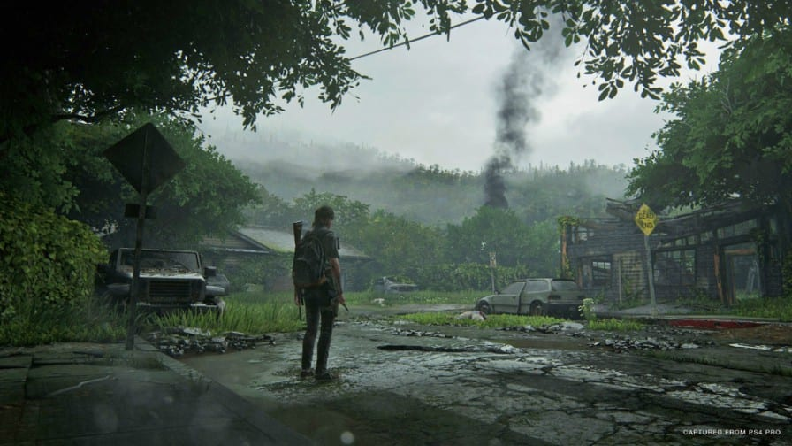
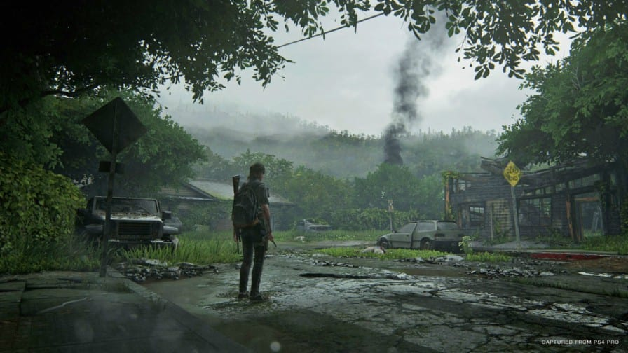

The Last of Us é um jogo eletrônico de ação-aventura e sobrevivência desenvolvido pela Naughty Dog e publicado pela Sony Computer Entertainment. Ele foi lançado exclusivamente para PlayStation 3 em 14 de junho de 2013. Na história, os jogadores controlam Joel, um homem encarregado de escoltar uma adolescente chamada Ellie através de um Estados Unidos pós-apocalíptico. The Last of Us é jogado a partir de uma perspectiva em terceira pessoa, com os jogadores usando armas de fogo, armas improvisadas e furtividade a fim de defenderem-se de humanos hostis e criaturas canibalísticas infectadas por uma mutação do fungo Cordyceps. Um "Modo de Escuta" permite a localização de inimigos por meio de uma escuta e percepção espacial aprimoradas. Armas podem ser melhoradas usando itens recolhidos do ambiente. Há um modo multijogador online em que até oito jogadores podem entrar em diferentes modos de partidas cooperativas ou competitivas.
O desenvolvimento de The Last of Us começou em 2009 logo depois da finalização de Uncharted 2: Among Thieves, o título anterior da Naughty Dog. A relação entre Joel e Ellie foi o foco central do jogo, com todos os outros elementos de história e jogabilidade desenvolvendo-se ao seu redor. A equipe criativa escolheu os atores Troy Baker e Ashley Johnson a fim de interpretarem os personagens principais, que realizaram a captura de movimentos e dublagem para seus respectivos papéis. Ambos auxiliaram o diretor de criação Neil Druckmann com o desenvolvimento da história e personagens. Novos motores de jogo foram criados para satisfazer as necessidades técnicas, com a inteligência artificial de Ellie sendo um grande ponto de desenvolvimento e aprimoramento. A trilha sonora original foi composta por Gustavo Santaolalla, enquanto os efeitos sonoros assumiram um ponto de vista mais naturalista e minimalista do que em outros jogos de ação.
The Last of Us foi anunciado em 2011, gerando grande expectativa. Ele foi aclamado pela crítica especializada, com elogios sendo direcionados particularmente para sua caracterização, enredo, subtexto, exploração da condição humana e representação de personagens femininas. O título tornou-se um dos jogos mais bem vendidos do PlayStation 3, vendendo mais de 1,3 milhões de cópias apenas em sua primeira semana e mais de oito milhões depois de catorze meses. The Last of Us é considerado como um dos melhores jogos eletrônicos da história, tendo vencido vários prêmios de Jogo do Ano. Um conteúdo para download chamado Left Behind foi lançado em fevereiro de 2014, com sua história se passando antes do jogo principal e centrando-se em Ellie e sua melhor amiga Riley. Uma remasterização intitulada The Last of Us Remastered foi lançada em julho de 2014 para PlayStation 4, enquanto sua sequência The Last of Us Part II tem previsão de estreia para maio de 2020.
 
